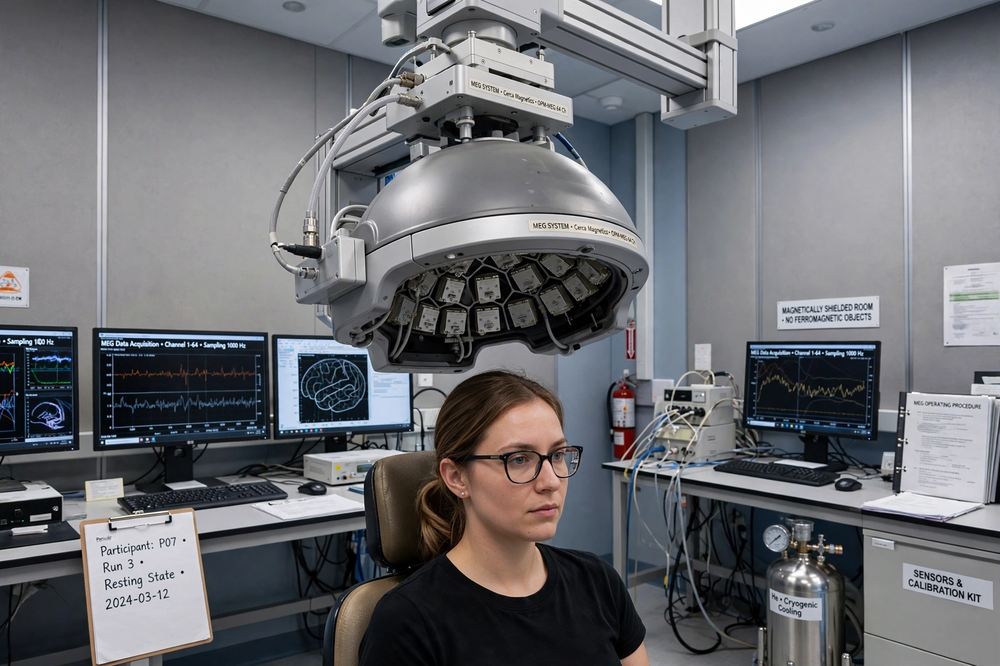

| Magnetoencephalography | |
| MeSH | D015225 |
|---|---|
| Purpose | Functional neuroimaging of brain activity via magnetic fields produced by neural currents |
| Sensors | SQUIDs; optically pumped magnetometers |
Magnetoencephalography (MEG) is a functional neuroimaging technique for mapping brain activity by recording the extremely weak magnetic fields produced by electrical currents occurring naturally in the brain. The fields, on the order of femtotesla (10−15 T), are detected with extremely sensitive magnetometers — traditionally superconducting quantum interference devices (SQUIDs) operated inside magnetically shielded rooms. MEG provides direct measures of neural electrical activity with millisecond temporal resolution, complementing techniques such as EEG and fMRI.

The first measurements of the brain's magnetic field were made by physicist David Cohen at the University of Illinois in 1968 using a copper induction coil, and then, in 1972 at MIT, using an early SQUID detector inside a shielded room. Sensor arrays grew from single channels to whole-head systems with over 300 channels in the 1990s and 2000s. Since the late 2010s, optically pumped magnetometers (OPMs), which operate at room temperature, have enabled wearable MEG systems that can be worn like a helmet and tolerate some head movement.
The measurable fields arise primarily from intracellular currents in populations of synchronised cortical pyramidal neurons, especially post-synaptic currents in their dendrites. Because magnetic fields are much less distorted than electric fields by the skull and scalp, MEG offers somewhat better spatial localisation than EEG for many sources, though reconstructing the sources (the inverse problem) is mathematically ill-posed and requires model assumptions. MEG signals are typically analysed as event-related fields, oscillatory activity, or spontaneous rhythms.
Clinically, MEG is used in the presurgical evaluation of epilepsy to localise epileptogenic tissue, and in presurgical functional mapping of eloquent cortex. In research it is widely used in studies of sensory and motor processing, language, cognition, psychiatric and neurological disorders, and brain development.
Electroencephalography · Neuroimaging · SQUID · Functional magnetic resonance imaging